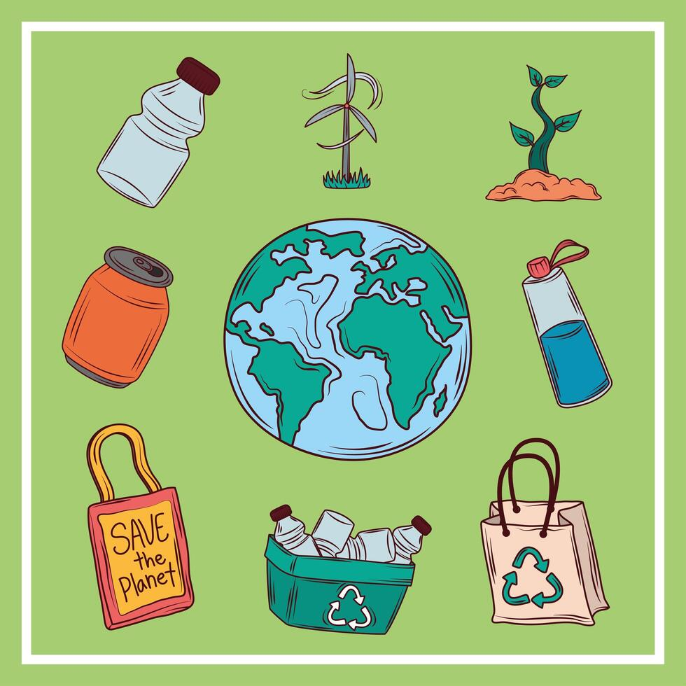
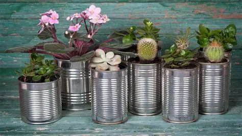
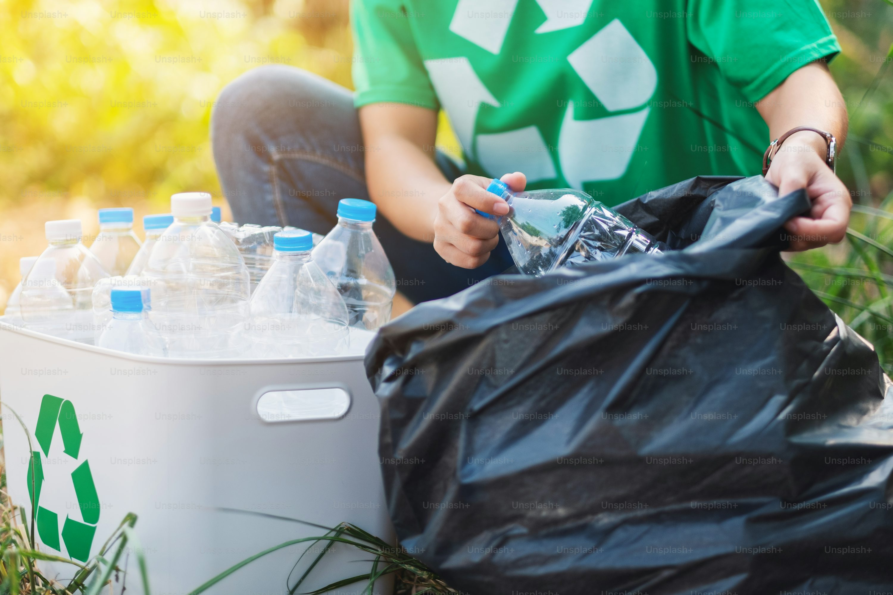

Se puede conseguir utilizando vasos y platos de cristal en vez de material plástico (desde el 3 de julio de 2021 quedó prohibida la venta de cualquier producto fabricado con plástico oxodegradable), bolsas de tela, bombillas de bajo consumo, evitando comprar agua embotellada o comprando productos a granel, entre otras muchas formas.La reducción es una de las tres R del consumo responsable, que busca minimizar el impacto ambiental a través de la disminución de la cantidad de desechos generados. Esto se logra mediante la reducción del consumo de recursos, así como la generación de residuos, desde la fase de producción hasta el consumo final del producto. La reducción involucra tanto a los consumidores como a las empresas y el Estado, quienes deben adoptar prácticas que eviten el desperdicio y la utilización excesiva de energía y combustibles.

Reducir consiste en disminuir la cantidad de basura que producimos y evitar el consumo innecesario de productos y materiales que pueden dañar el medio ambiente.
El reutilizar es la accion que permite volver a utilizar los biene o productos desechdos, denominados resibuos,resibuos solidos urbanos,y darle un uso igual o diferente a aquelpara el que fueron concebidos. Este proceso hace que uantos mas objetos volvamos a reutilizar menos basura produciremos y menos recursos tendremos que gastar. la reutilizacion ocupa el segundo puesto en la jerarquia de residuos, despuesde la prevencion y por encima del resiclaje. Reutilizar es la acción que permite volver a utilizar los bienes o productos desechados, denominados residuo (p. ej. residuos sólidos urbanos), y darles un uso igual o diferente a aquel para el que fueron concebidos. proceso hace que cuantos más objetos volvamos a reutilizar menos basura produciremos y menos recursos tendremos que gastar. La reutilización ocupa el segundo puesto en la jerarquía de residuos, después de la prevención y por encima del reciclaje.

lograr que las personas desarrollan y/o fortalezcan la conciencia sobre la necesidad de proteger el medio ambiente.
Reciclar es una de las acciones más importantes para cuidar el medio ambiente y consiste en recolectar, separar y transformar los materiales que ya fueron utilizados para convertirlos en nuevos productos. Su propósito principal es aprovechar los residuos que todavía pueden tener utilidad, en lugar de tirarlos a la basura y permitir que contaminen nuestro planeta. Algunos de los materiales que se pueden reciclar son el papel, el cartón, el plástico, el vidrio y el aluminio. Estos materiales pasan por diferentes procesos para poder convertirse nuevamente en objetos que podemos utilizar en nuestra vida diaria. El reciclaje es muy importante porque ayuda a disminuir la cantidad de basura que producimos todos los días y reduce la contaminación del suelo, el agua y el aire. Además, permite ahorrar energía y recursos naturales, como los árboles, el agua y los minerales que se utilizan para fabricar nuevos productos. Por ejemplo, cuando reciclamos papel y cartón, ayudamos a disminuir la tala de árboles; cuando reciclamos plástico, evitamos que muchos residuos terminen en los ríos, mares y océanos, donde pueden afectar a los animales y las plantas.

El objetivo de reciclar es aprovechar los materiales que ya fueron utilizados, transformándolos en nuevos productos para disminuir la cantidad de basura y evitar la contaminación del medio ambiente. También busca ahorrar recursos naturales, como el agua, los árboles y los minerales, reducir el consumo de energía y proteger a los animales y las plantas. De esta manera, contribuimos a mantener nuestro planeta limpio y saludable para las futuras generaciones.
volver arriba